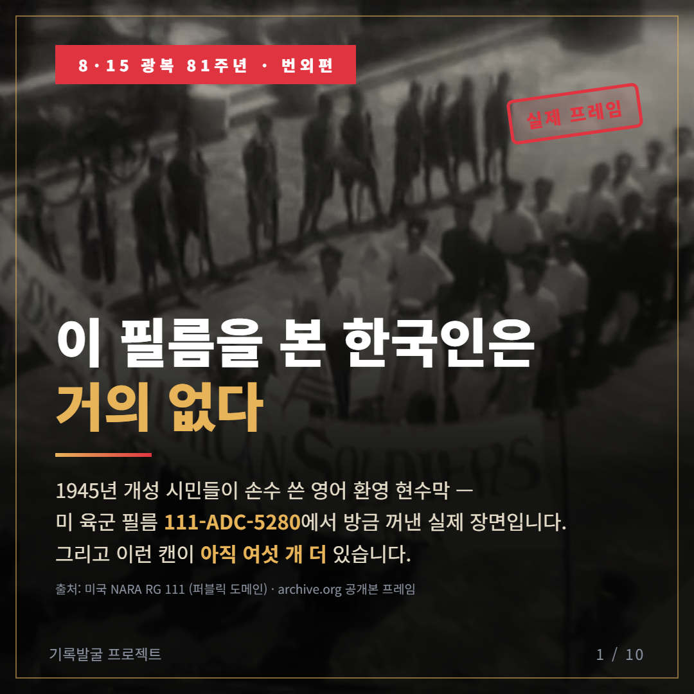
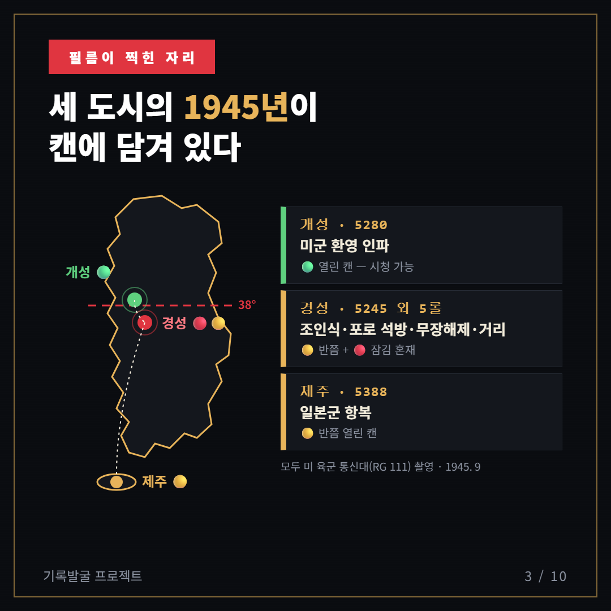
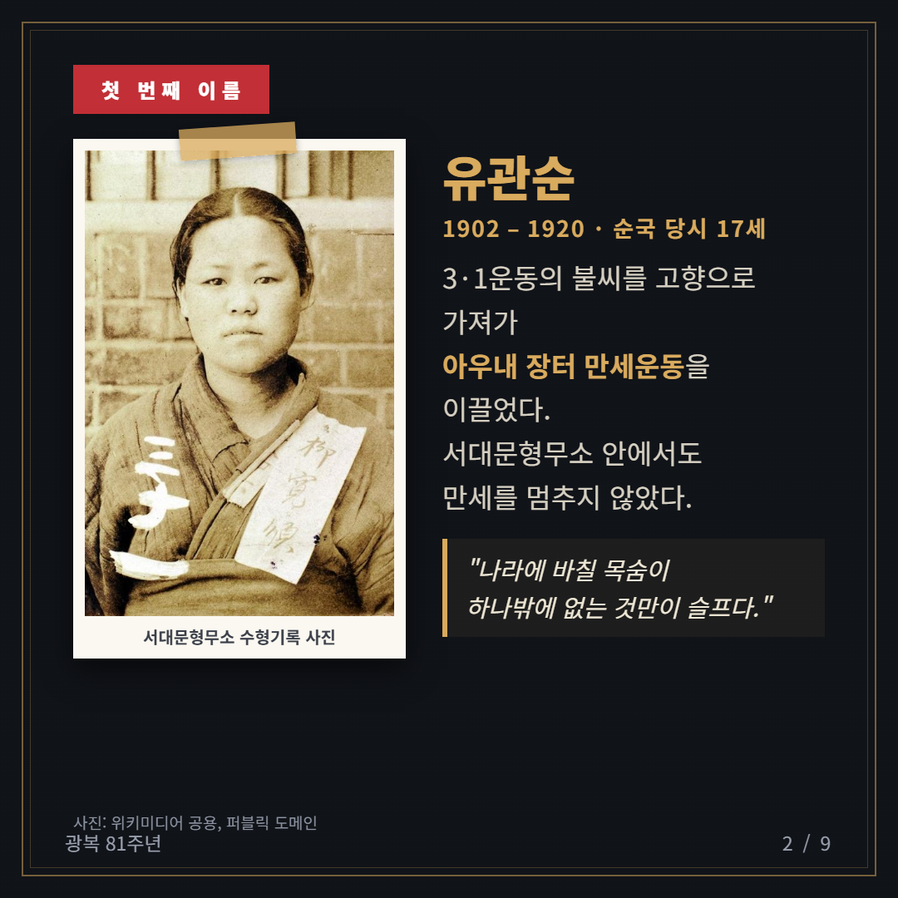

실제로 만든 결과물
카드뉴스 — 8·15 광복 81주년 시리즈
전부 저작권이 만료된 실물 기록으로 만들었습니다. AI로 그린 장면은 없습니다.






더 보기: 한강의 배 보고서 · 강연 자료 403장 · 기록잇다 — 브라우저 즉석 검색
9개국 30곳의 문서고에서 한국 기록을 찾아 원문·출처·이용 권리를 정리하고, 원하면 보고서·카드뉴스·논문 각주까지 만들어 주는 Claude 플러그인입니다.
두 방법 모두 같은 검색 도구 20종을 씁니다. 플러그인에는 컴퓨터에서 실행하는 전문 스킬 11종이 더 들어 있습니다.
Claude 데스크톱 앱이나 Claude Code를 쓰는 분
대화창에 아래 두 줄을 차례로 입력합니다.
/plugin marketplace add changgi/korea-archive-marketplace /plugin install korea-archive@korea-archive-marketplace
Claude 웹사이트나 스마트폰 앱을 쓰는 분
설정 → 커넥터 → 커스텀 커넥터 추가 → 아래 주소 붙여 넣기
https://korea-archive-mcp.vercel.app/api/mcp
설치 후 "창기창기 도와줘"라고 말하면 사용법을 안내해 줍니다.
1910~45년 기록에서 서울은 "Seoul"이 아니었습니다.
같은 "장진호"도 문서고마다 다르게 적혀 있어, 이 플러그인이 알아서 바꿔 찾습니다.
아래는 모두 실제로 돌려 본 결과입니다.
| 🗣️ "장진호 전투 기록 찾아줘" | Chosin Reservoir로 자동 변환해 미국 국립기록관리청에서만 512건을 찾고, 다른 문서고 결과와 합쳐 줍니다. |
| 🗣️ "안중근 의거 당시 신문 기사 찾아줘" | 대한매일신보 [3면 3단] (1909.11.9)처럼 면·단까지 적힌 목록. 논문 각주에 바로 옮길 수 있습니다. |
| 🗣️ "유관순 공훈록 보여줘" | 공적조서·공훈록 전문·수형 기록·묘소·현충시설을 한 번에 가져옵니다. |
| 🗣️ "이 미국 기록 사진 써도 돼?" | 권리 A등급(이용 제한 없음) 확인과 촬영일·실물 소장 위치·원본 파일 주소. |
| 🗣️ "인천상륙작전 영상, 같은 묶음 더 찾아줘" | 기록 번호 앞뒤를 훑어 D-DAY 연속 필름 5편을 한 번에 찾습니다. |
| 🗣️ "찾은 거 표로 정리해줘" | 제목·날짜·소장 기관·소속 분류·원본 이미지 주소가 담긴 엑셀용 표(CSV). |
| 🗣️ "장진호 기록, 같은 것끼리 묶어줘" | 한국 기관 재수집본과 미국 원본을 같은 기록으로 묶습니다. 이 검색에서 9건 중 5건이 두 기관에서 확인됐습니다. |
| 🗣️ "장진호 풀패키지로 만들어줘" | 조사부터 보고서·카드뉴스 8장·포스터·발표 자료까지 이어서 만듭니다. |
스킬은 특정 작업을 잘 해내기 위한 작업 설명서입니다. 따로 고를 필요 없이, 해당하는 부탁을 하면 자동으로 쓰입니다.
표기 변형·교차검증 전략을 자동으로 적용해 한국 기록을 찾습니다.
한국사DB·규장각·승정원일기·실록처럼 일반 검색이 안 되는 사이트를 찾습니다.
규장각 고문헌의 원문 이미지를 찾아 내려받고 인용 형식까지 정리합니다.
법전·등록·일기를 맞대어 읽고, 제도가 언제 어떻게 바뀌었는지 정리합니다.
필름을 장면별로 나눠 보고, 화면 속 글자(슬레이트·간판·현수막)를 읽어 촬영 날짜·장소를 밝힙니다.
사진·문서 위에 번호 표시와 설명을 얹은 해설 카드를 만듭니다. 추측은 걸러냅니다.
조사·검증·보고서·카드뉴스·포스터·발표 자료까지 한 문장으로 이어서 만듭니다.
실물 기록 이미지로 1080×1080 카드를 디자인하고 이미지 파일로 뽑아 캡션까지 씁니다.
실록·승정원일기 등 한국사DB 자료를 각주·참고문헌 형식으로 씁니다.
학위논문·단행본 등 국회도서관 자료를 APA·Chicago 등 형식으로 씁니다.
연결 방법·예시 문장·만들 수 있는 결과물을 친절하게 알려 줍니다.
전부 저작권이 만료된 실물 기록으로 만들었습니다. AI로 그린 장면은 없습니다.



더 보기: 한강의 배 보고서 · 강연 자료 403장 · 기록잇다 — 브라우저 즉석 검색
두 줄이면 설치가 끝나고, "창기창기 도와줘"라고 말하면 시작입니다.